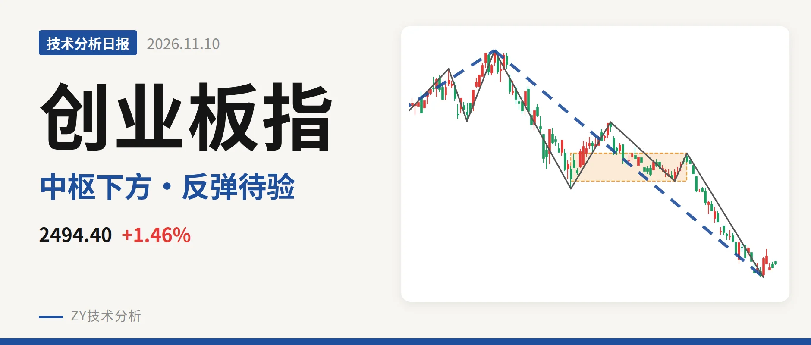
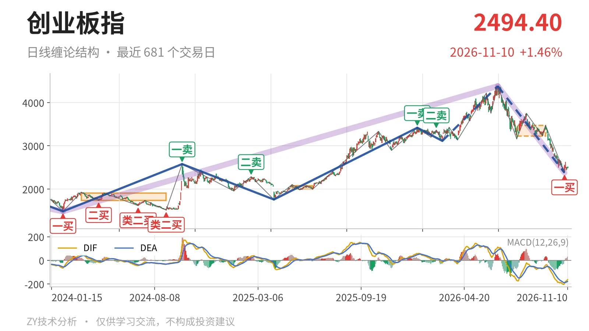
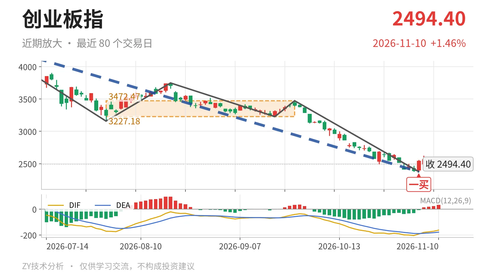

创业板指｜跌穿日线中枢，反抽观察3227点

最近日线中枢 3227.18—3472.47点，收盘位于中枢之下
一句话：最新价低于最近中枢下沿约733点，反抽不回3227点则构成三卖
📉 走势结构：日线下跌段还在延续，反弹尚无笔
更大级别里，2024年2月5日至2026年6月25日的上涨走势还没走完，但2026年6月25日以来的下跌走势同样没有结束。日线线段上，2026年6月25日至2026年11月4日的下跌线段还在延续，内部已有5笔；11月5日至11月10日的反弹最高2625.99点，只走了4根K线，尚未形成新一笔。当前仍是4380.41点以来下跌段内部的反弹，不具备日线上涨段条件。

🧭 中枢与位置：跌破最近日线笔中枢，重心下移
最新收盘2494.40点，在2026年7月30日至2026年9月22日日线笔中枢3227.18—3472.47点下方，低于下沿约733点。该中枢由2026年7月30日启动的反弹构建，位置较2025年5月14日至2025年6月23日中枢1996.96—2076.91点明显上移，但价格没有守住，回落到中枢下方。下方更早的线段中枢看2022年4月27日至2023年8月4日2122.32—2282.65点，最新价仍在其上沿上方约212点。
📌 买卖点：11月4日一买为笔级别，3月三买已降级
近期日线笔买卖点中，2026年1月13日3416.84点为一卖，2026年2月25日3363.18点二卖，卖点一个比一个低。2026年11月4日2376.28点形成一买，所在下跌笔2026年9月22日至2026年11月4日已经结束，因此不是暂定的一买；但它处于2026年6月25日以来的下跌线段内部，只对应笔级别反弹。线段级别上，2026年3月9日3111.88点三买已被这轮下跌跌破，不能再按线段三买理解，降为小级别结构。

⚡ 背驰：绿柱面积收缩，DIF低点却新低
最关键一组同向对比，2026年6月25日至2026年7月30日下跌笔绿柱面积1837，DIF低点-171.1；2026年9月22日至2026年11月4日下跌笔绿柱面积1107，DIF低点-204.5。价格创出2376.28点新低，绿柱面积由1837缩到1107，但DIF低点没有抬高，反而继续下移。这只能说明下跌动能较前一段减弱，未出现标准的新低不新弱，底背驰不充分，所以11月4日一买先按笔级别看待。
🔎 关键位置观察：反抽不回3227点，结构上构成三卖
11月5日至11月10日反弹最高2625.99点，距离3227点仍有明显空间。若后续反抽不能回到3227点附近，对2026年7月30日至2026年9月22日中枢而言，结构上就是三卖；重新站上3227点，下跌更可能只是中枢扩展，而不是延续趋势下跌。上方进一步看3472点附近，下方结构参考2122—2283点区间。当前结构偏弱，反弹尚未改变日线下跌段性质。
⚠️ 本文为基于公开行情数据的缠论技术结构记录，由程序自动计算并生成，仅供学习交流，不构成任何投资建议。市场有风险，投资需谨慎。